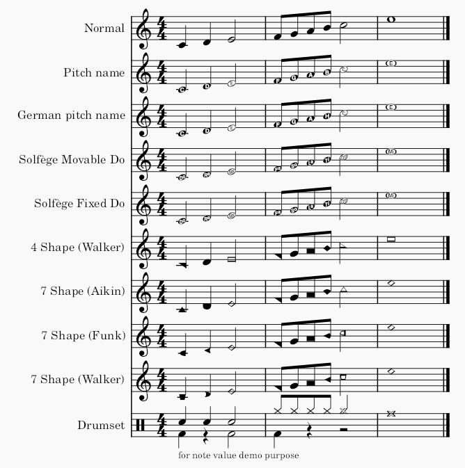

自定义谱表类型
概述
MuseScore 有四种谱表类型，每种类型都有不同的内置模板，请参阅谱表/分谱属性。
要创建用于整个乐谱的自定义谱表：
- 使用所有四种谱表类型通用的此步骤：通过设置乐谱或在排版面板中找到并添加一个与目标谱表类型相似的乐器，然后更改其谱表属性和高级样式属性，符头方案也可以在那里自定义。
- 对于打击乐谱表（类型 3，请参阅谱表/分谱属性），除上述操作外，还要使用编辑鼓组窗口进行符头相关设置，请参阅鼓组自定义。
要创建用于乐谱某一部分的自定义谱表：
改良谱表记谱法（MSN）是一种常用于大字本乐谱的格式。要使用 MSN，请参阅 MuseScore 3 教程页面在 MuseScore 中创建改良谱表记谱法，它在 MuseScore 4 中的操作方式类似。
自定义谱表线的外观
[本节正在进行中，请补充缺失信息]
- 数量
- 颜色
- 可见性
- 线间距
自定义生成元素的外观
[本节正在进行中，请补充缺失信息]
- 谱号
- 调号
- 拍号
- 小节线
自定义音符的外观
- 加线 [正在进行中，请补充缺失信息]
- 符干 [正在进行中，请补充缺失信息]
符头方案

\ _下载此测试乐谱文件 [MS4 Noteheadschemes.mscz](https://musescore.org/sites/musescore.org/files/2023-10/ms411\_noteheadschemes.mscz)\_
“符头方案”被音乐家用来指定符头形状的含义。在 MuseScore 4.1.1 中，谱表的方案名为“符头方案”（Notehead Scheme），音符的相同选项名为“符头系统”（Notehead System），请参阅符头。
MuseScore 有九种方案。其中五种被直接完整支持，写出的音符可产生正确的播放。四种“形状音符记谱法”在符头雕刻方面受支持，用户需要利用“移调乐器”功能来创建所需的播放效果，请参阅符头。
要创建自定义“形状音符记谱法”，请参阅符头。
MuseScore 支持的九种方案是：
- 普通：绝大多数音乐家使用的默认方案。
4 种与唱名法相关的记谱法：
- 音名：符头会自动动态变化，在符头中包含英文音名。
- 德语音名：类似于音名，但 B 替换为 H，B♭ 替换为 B。
- 首调唱名法（Movable Do，也称为 Tonic Solfa）：符头直接写出唱名。它使用 Ti 而不是 Si。
- 固定唱名法（Fixed Do）：符头直接写出唱名。在法国、意大利、西班牙等国家使用。它使用 Si 而不是 Ti。
4 种形状音符记谱法，如果您希望创建所需的播放效果，则需要进一步配置：
- 4 形状（Walker）：用于威廉·沃克（William Walker）的 Southern Harmony（1835）等书籍。
- 7 形状（Aikin）：用于杰西·B·艾金（Jesse B. Aikin）的 The Christian Minstrel（1846）等书籍，以及 Ruebush & Kieffer 出版公司的书籍。这是最常用的 7 形状系统。
- 7 形状（Funk）：用于约瑟夫·芬克（Joseph Funk）的 Harmonia Sacra（1851）等书籍。
- 7 形状（Walker）：用于威廉·沃克（William Walker）的 Christian Harmony（1867）等书籍。
乐谱中途更改谱表类型
请参阅概述
[本节正在进行中，请补充缺失信息]
- 上述大部分内容加上线与级偏移
外部链接
关于符头方案：